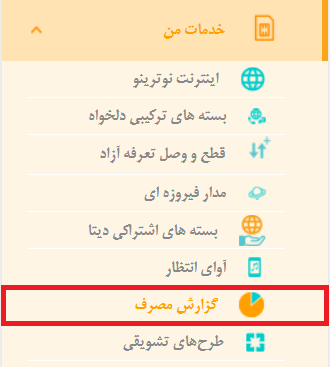
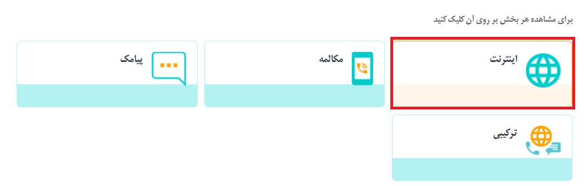
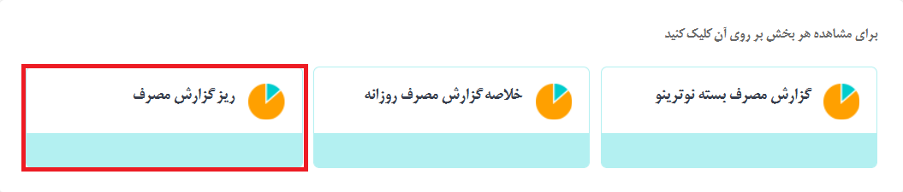
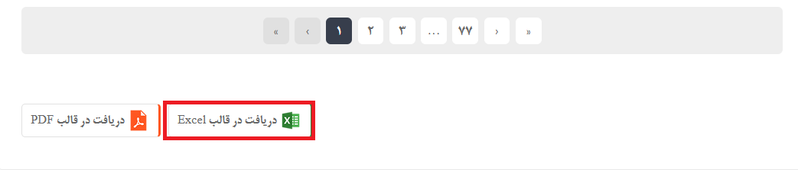
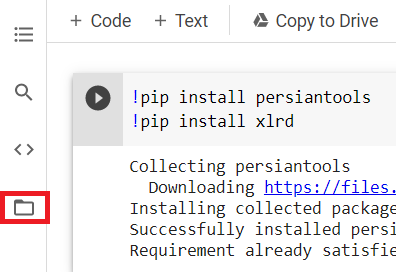
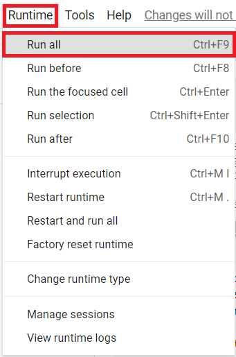
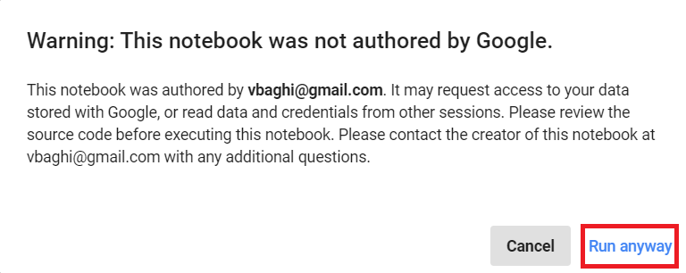
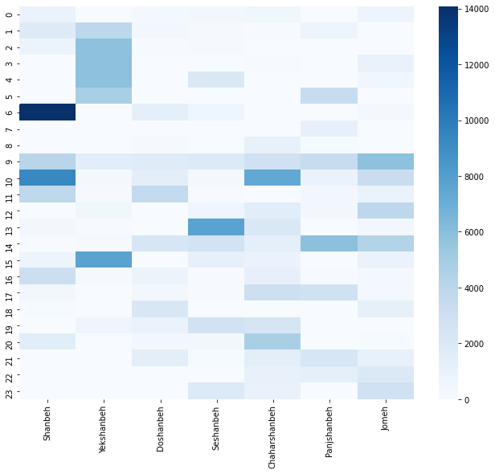

همونطور که احتمالا میدونید، شما از طریق سایت https://my.mci.ir میتونید زیر گزارش مصرف اینترنت خودتون رو در قالب یک فایل اکسل دریافت کنید. برای اونهایی که نمیدونن یکبار توضیح میدم. زمانی که در آدرس بالا لاگین کنید، از منوی سمت راست، خدمات من و سپس گزارش مصرف رو انتخاب کنید

حالا اینترنت رو انتخاب کنید :

و در ادامه هم ریز گزارش مصرف رو انتخاب کنید :

حالا بازه زمانی مد نظرتون رو انتخاب کنید و در نهایت بر روی دکمه مشاهده گزارش کلیک کنید و در انتهای صفحه دریافت در قالب Excel رو بزنید :

زمانی که این کار رو انجام بدید یک فایل با نام detailedDataUsageReport.xls دانلود میشه. حالا برای مصورسازی داده ها ابتدا لینک زیر رو باز کنید :
توجه داشته باشید که قبلش باید توی حساب جیمیل خودتون لاگین کرده باشید. بعد از اینکه لینک بالا رو باز کردید، بر روی بخشی که در تصویر زیر با کادر قرمز مشخص کرد کلیک کنید :

حالا بر روی دکمه ای که در تصویر زیر با کادر قرمز مشخص کردم کلیک کنید و فایل detailedDataUsageReport.xls رو آپلود کنید. توجه داشته باشید اسمش دقیقا باید همین باشه. سپس از منوی Runtime بر روی گزینه Run all کلیک کنید :

اگر پیغام زیر رو مشاهده کردید بر روی Run anyway کلیک کنید :

زمانی که این کار رو انجام بدید در خروجی تصویری مشابه تصویر زیر رو مشاهده میکنید :

این نمودار چه چیزی رو نشون میده؟ محور افقی روز های هفته و محور عمودی ساعات روز رو نشون میده. برای مثال از نمودار بالا میشه متوجه شد من یکشنبه ها در ساعت ۱ شب تا ۵ صبح بیشترین مصرف اینترنت رو داشتم. محوری که سمت راست مشاهده میکنید حجم مصرفی رو نشون میده که کمترین حجم مصرفی صفر و بیشتری حجم مصرفی 14000 مگابایت یا 14 گیگابایت است.
nb.neighbours()
| title | date | |
|---|---|---|
| prev | استخراج اطلاعات از توییتر با js و inspect! | ۱۴۰۰/۰۴ |
| next | انتخاب بستهٔ اینترنت همراه به کمک مسئلهٔ کولهپشتی! | ۱۴۰۰/۰۴ |